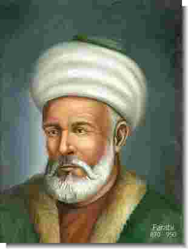

Abu Nasir Muhammad bin al-Farakh al-Farabi Abu Nasir Muhammad bin al-Farakh al-Farabi (870-950) singkat Al-Farabi adalah ilmuwan dan filsuf Islam yang berasal dari Farab, Kazakhstan. Ia juga dikenal dengan nama lain Abu Nasir al-Farabi (dalam beberapa sumber ia dikenal sebagai Abu Nasr Muhammad Ibn Muhammad Ibn Tarkhan Ibn Uzalah Al- Farabi , juga dikenal di dunia barat sebagai Alpharabius, Al-Farabi, Farabi, dan Abunasir. Ayahnya seorang opsir tentara Turki keturunan Persia, sedangkan ibunya berdarah Turki asli. Sejak dini ia digambarkan memiliki kecerdasan istimewa dan bakat besar untuk menguasai hampir setiap subyek yang dipelajari. Pada masa awal pendidikannya ini, al-Farabi belajar al-Qur’an, tata bahasa, kesusasteraan, ilmu-ilmu agama (fiqh, tafsir dan ilmu hadits) dan aritmatika dasar. Al-Farabi muda belajar ilmu-ilmu islam dan musik di Bukhara, dan tinggal di Kazakhstan sampai umur 50. Ia pergi ke Baghdad untuk menuntut ilmu di sana selama 20 tahun. Setelah kurang lebih 10 tahun tinggal di Baghdad, yaitu kira-kira pada tahun 920 M, al Farabi kemudian mengembara di kota Harran yang terletak di utara Syria, dimana saat itu Harran merupakan pusat kebudayaan Yunani di Asia kecil. Ia kemudian belajar filsafat dari Filsuf Kristen terkenal yang bernama Yuhana bin Jilad. Tahun 940M, al Farabi melajutkan pengembaraannya ke Damaskus dan bertemu dengan Sayf al Dawla al Hamdanid, Kepala daerah (distrik) Aleppo, yang dikenal sebagai simpatisan para Imam Syi’ah. Kemudian al-Farabi wafat di kota Damaskus pada usia 80 tahun (Rajab 339 H/ Desember 950 M) di masa pemerintahan Khalifah Al Muthi’ (masih dinasti Abbasiyyah). Al-Farabi adalah seorang komentator filsafat Yunani yang ulung di dunia Islam. Meskipun kemungkinan besar ia tidak bisa berbahasa Yunani, ia mengenal para filsuf Yunani; Plato, Aristoteles dan Plotinus dengan baik. Kontribusinya terletak di berbagai bidang seperti matematika, filosofi, pengobatan, bahkan musik. Al-Farabi telah menulis berbagai buku tentang sosiologi dan sebuah buku penting dalam bidang musik, Kitab al-Musiqa. Selain itu, ia juga dapat memainkan dan telah menciptakan bebagai alat musik. Al-Farabi dikenal dengan sebutan "guru kedua" setelah Aristoteles, karena kemampuannya dalam memahami Aristoteles yang dikenal sebagai guru pertama dalam ilmu filsafat. Dia adalah filsuf Islam pertama yang berupaya menghadapkan, mempertalikan dan sejauh mungkin menyelaraskan filsafat politik Yunani klasik dengan Islam serta berupaya membuatnya bisa dimengerti di dalam konteks agama-agama wahyu. Al-Farabi hidup pada daerah otonomi di bawah pemerintahan Sayf al Dawla dan di zaman pemerintahan dinasti Abbasiyyah, yang berbentuk Monarki yang dipimpin oleh seorang Khalifah. Ia lahir dimasa kepemimpinan Khalifah Mu’tamid (869-892 M) dan meninggal pada masa pemerintahan Khalifah Al-Muthi’ (946-974 M) dimana periode tersebut dianggap sebagai periode yang paling kacau karena ketiadaan kestabilan politik. Dalam kondisi demikian, al-Farabi berkenalan dengan pemikiran-pemikiran dari para ahli Filsafat Yunani seperti Plato dan Aristoteles dan mencoba mengkombinasikan ide atau pemikiran-pemikiran Yunani Kuno dengan pemikiran Islam untuk menciptakan sebuah negara pemerintahan yang ideal (Negara Utama).
|